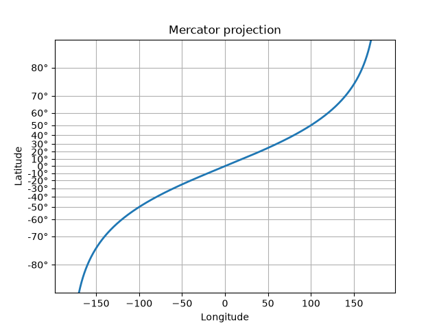

Note
Go to the end to download the full example code.
Custom scale#
Custom scales can be created in two ways
For simple cases, use
FuncScaleand the'function'option ofset_xscaleandset_yscale. See the last example in Scales overview.Create a custom scale class such as the one in this example, which implements the scaling use for latitude data in a Mercator Projection. This more complicated approach is useful when
You are making special use of the
Transformclass, such as the special handling of values beyond the threshold inMercatorLatitudeTransformbelow.You want to override the default locators and formatters for the axis (
set_default_locators_and_formattersbelow).You want to limit the range of the axis (
limit_range_for_scalebelow).

import numpy as np
from numpy import ma
from matplotlib import scale as mscale
from matplotlib import transforms as mtransforms
from matplotlib.ticker import FixedLocator, FuncFormatter
class MercatorLatitudeScale(mscale.ScaleBase):
"""
Scales data in range -pi/2 to pi/2 (-90 to 90 degrees) using
the system used to scale latitudes in a Mercator__ projection.
The scale function:
ln(tan(y) + sec(y))
The inverse scale function:
atan(sinh(y))
Since the Mercator scale tends to infinity at +/- 90 degrees,
there is user-defined threshold, above and below which nothing
will be plotted. This defaults to +/- 85 degrees.
__ https://en.wikipedia.org/wiki/Mercator_projection
"""
# The scale class must have a member ``name`` that defines the string used
# to select the scale. For example, ``ax.set_yscale("mercator")`` would be
# used to select this scale.
name = 'mercator'
def __init__(self, axis, *, thresh=np.deg2rad(85), **kwargs):
"""
Any keyword arguments passed to ``set_xscale`` and ``set_yscale`` will
be passed along to the scale's constructor.
thresh: The degree above which to crop the data.
"""
super().__init__(axis)
if thresh >= np.pi / 2:
raise ValueError("thresh must be less than pi/2")
self.thresh = thresh
def get_transform(self):
"""
Override this method to return a new instance that does the
actual transformation of the data.
The MercatorLatitudeTransform class is defined below as a
nested class of this one.
"""
return self.MercatorLatitudeTransform(self.thresh)
def set_default_locators_and_formatters(self, axis):
"""
Override to set up the locators and formatters to use with the
scale. This is only required if the scale requires custom
locators and formatters. Writing custom locators and
formatters is rather outside the scope of this example, but
there are many helpful examples in :mod:`.ticker`.
In our case, the Mercator example uses a fixed locator from -90 to 90
degrees and a custom formatter to convert the radians to degrees and
put a degree symbol after the value.
"""
fmt = FuncFormatter(
lambda x, pos=None: f"{np.degrees(x):.0f}\N{DEGREE SIGN}")
axis.set(major_locator=FixedLocator(np.radians(range(-90, 90, 10))),
major_formatter=fmt, minor_formatter=fmt)
def limit_range_for_scale(self, vmin, vmax, minpos):
"""
Override to limit the bounds of the axis to the domain of the
transform. In the case of Mercator, the bounds should be
limited to the threshold that was passed in. Unlike the
autoscaling provided by the tick locators, this range limiting
will always be adhered to, whether the axis range is set
manually, determined automatically or changed through panning
and zooming.
"""
return max(vmin, -self.thresh), min(vmax, self.thresh)
class MercatorLatitudeTransform(mtransforms.Transform):
# There are two value members that must be defined.
# ``input_dims`` and ``output_dims`` specify number of input
# dimensions and output dimensions to the transformation.
# These are used by the transformation framework to do some
# error checking and prevent incompatible transformations from
# being connected together. When defining transforms for a
# scale, which are, by definition, separable and have only one
# dimension, these members should always be set to 1.
input_dims = output_dims = 1
def __init__(self, thresh):
mtransforms.Transform.__init__(self)
self.thresh = thresh
def transform_non_affine(self, a):
"""
This transform takes a numpy array and returns a transformed copy.
Since the range of the Mercator scale is limited by the
user-specified threshold, the input array must be masked to
contain only valid values. Matplotlib will handle masked arrays
and remove the out-of-range data from the plot. However, the
returned array *must* have the same shape as the input array, since
these values need to remain synchronized with values in the other
dimension.
"""
masked = ma.masked_where((a < -self.thresh) | (a > self.thresh), a)
if masked.mask.any():
return ma.log(np.abs(ma.tan(masked) + 1 / ma.cos(masked)))
else:
return np.log(np.abs(np.tan(a) + 1 / np.cos(a)))
def inverted(self):
"""
Override this method so Matplotlib knows how to get the
inverse transform for this transform.
"""
return MercatorLatitudeScale.InvertedMercatorLatitudeTransform(
self.thresh)
class InvertedMercatorLatitudeTransform(mtransforms.Transform):
input_dims = output_dims = 1
def __init__(self, thresh):
mtransforms.Transform.__init__(self)
self.thresh = thresh
def transform_non_affine(self, a):
return np.arctan(np.sinh(a))
def inverted(self):
return MercatorLatitudeScale.MercatorLatitudeTransform(self.thresh)
# Now that the Scale class has been defined, it must be registered so
# that Matplotlib can find it.
mscale.register_scale(MercatorLatitudeScale)
if __name__ == '__main__':
import matplotlib.pyplot as plt
t = np.arange(-180.0, 180.0, 0.1)
s = np.radians(t)/2.
plt.plot(t, s, '-', lw=2)
plt.yscale('mercator')
plt.xlabel('Longitude')
plt.ylabel('Latitude')
plt.title('Mercator projection')
plt.grid(True)
plt.show()